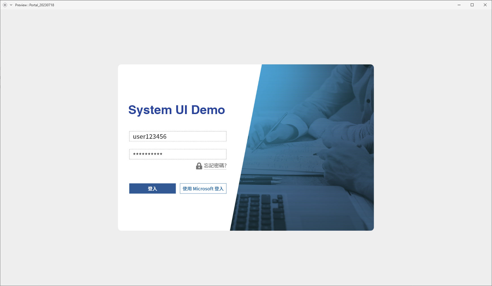
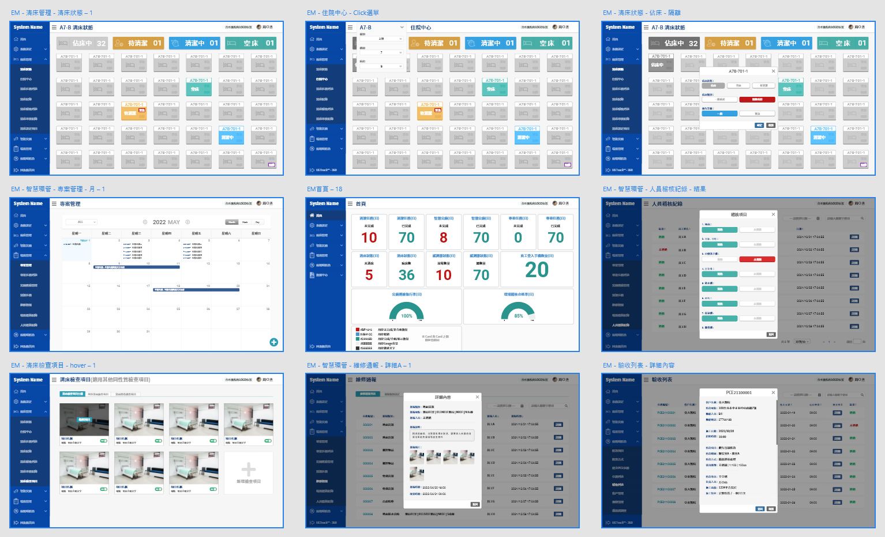
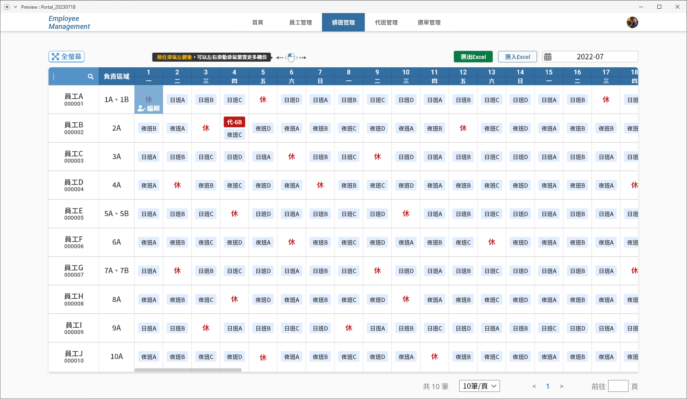
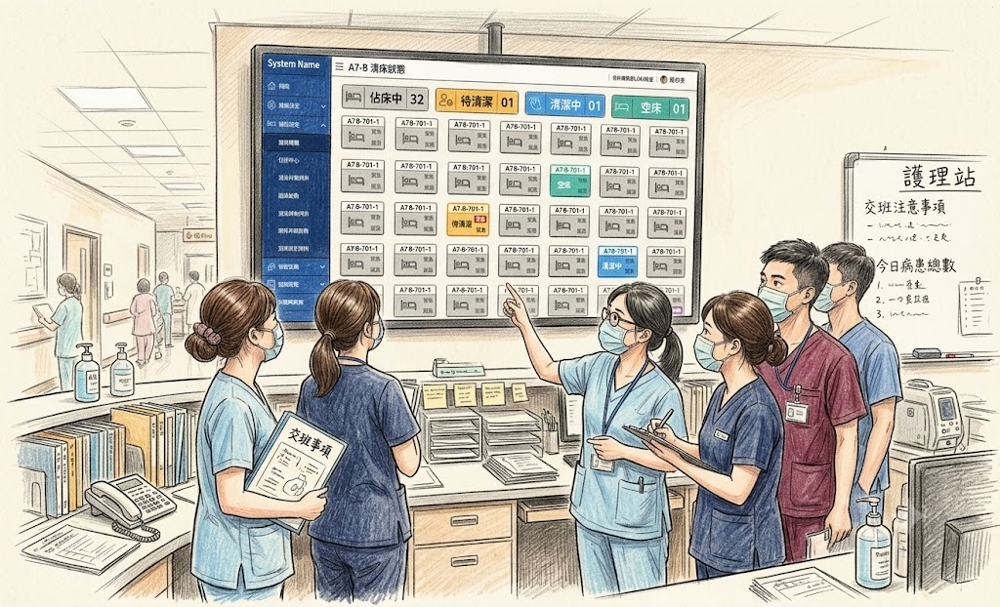

視覺設計、AdobeXD原型規劃
由於公司合作的醫院方有需求，希望能夠建立一套完善的醫療管理系統，以提升醫療服務的效率和品質，並且提出方便護理站看出各病床使用狀態的需求，於是先從主管到各大醫院的取材開始，交付照片給我後，我再依據網路上國外能找到的資源、相關醫療類型Dashboard一步步建構出適合發案方的整套醫療管理系統

由於知道發案方護理站需要即時了解各病床使用狀態，因此在設計過程中特別注重資訊呈現的清晰度和操作的便捷性，並考慮到公司派遣人員的任務進度管理，設計了各個相關頁面供對方使用


設計病床管理的部份時，專案後期會先給予發案方過目，發案方會回饋介面有哪些需要調整的地方，我們收到反饋後會立即調整，最終得已交付管理系統讓需求方便於使用
